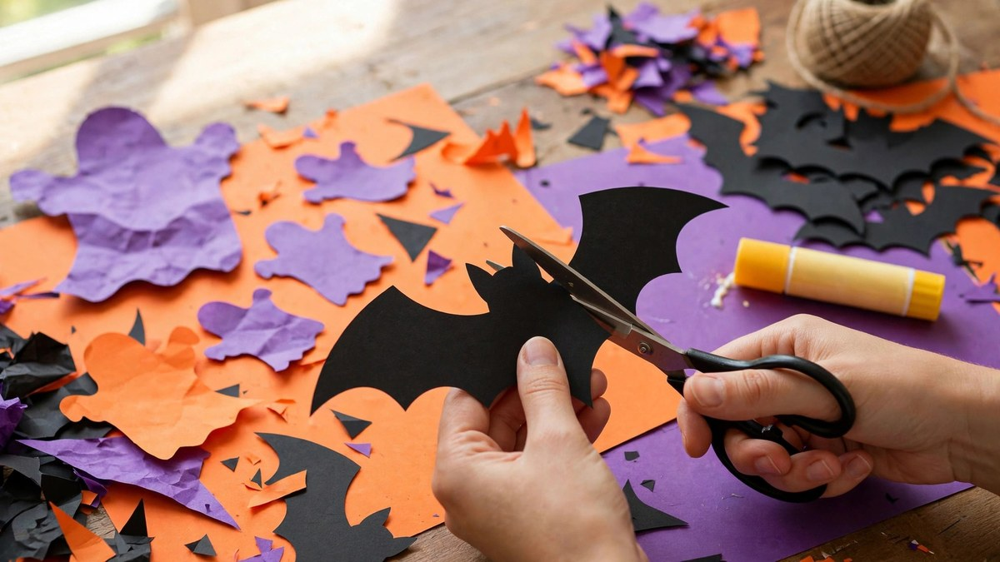

DIY Halloween Paper Decorations 2026: Bats, Ghosts & Garlands
Published October 17, 2026 · Updated October 17, 2026 · By EventBuzz Team · 4 min read

Paper is Halloween decorating’s best-kept secret: nearly free, endlessly versatile, and capable of genuinely stunning results. A few sheets of black card can become a bat swarm worthy of a magazine shoot.
These DIY Halloween paper decoration ideas for 2026 need only paper, scissors, and tape — plus printable templates you can find free online.
Paper Bat Swarm
The single highest-impact paper project: cut bat shapes from black card (fold paper to cut multiples at once), then tape them “flying” up a wall, across a mantel, or over a doorway.
- Vary the sizes — small, medium, large — for a natural flock look.
- Curve the wings slightly before taping for a 3D effect.
- Removable tape or poster putty keeps walls safe.
- One evening, ~50 bats, essentially free.
Ghosts & Garlands
- Tissue ghosts: tissue over a cotton ball, tied with string, faces drawn on. Hang in clusters.
- Paper-chain garland: orange and black loops — the nostalgic classic kids love making.
- Ghost garland: white card ghosts strung on twine with drawn faces, alternating with orange pumpkins.
- Tassel garland: tissue-paper tassels in Halloween colours. Looks boutique, costs pennies.
Window Silhouettes
Black paper silhouettes taped inside windows are visible from the street when rooms are lit — the best curb appeal per dollar in Halloween.
- Bats, cats, witches on broomsticks, haunted houses — silhouettes forgive wobbly cutting.
- Use black construction paper or card; tape with removable adhesive.
- Backlight with the room’s normal lamps — no special lighting needed.
Table & Detail Crafts
- Place cards: mini pumpkins or ghost shapes with guest names — party-ready.
- Cupcake toppers: bats and hats on toothpicks. Instant bakery-level presentation.
- Book-page art: cut shapes from damaged books for vintage-style garlands and wreaths.
- Paper lanterns: orange paper bags + LED tea lights = glowing luminaries for paths and tables.
Frequently Asked Questions
What paper is best for Halloween decorations?
Black cardstock for silhouettes and bats (sturdy, opaque), tissue paper for ghosts and tassels, construction paper for kid crafts.
How do I hang paper decorations without damaging walls?
Removable poster putty, painter’s tape loops, or Command strips. Test in a hidden spot first.
Are paper decorations okay outdoors?
Only in dry weather — paper and rain don’t mix. Laminate pieces you want to reuse outside, or bring them in nightly.
What paper crafts can kids do for Halloween?
Paper chains, handprint ghosts, tissue ghosts, and cut-out bats are all kid-friendly. See our kids’ crafts guide for more.
Conclusion
Paper proves that Halloween magic is about imagination, not budget. An evening with scissors and card beats a shopping cart of plastic — and the results are uniquely yours.
More handmade ideas in our crafts and budget decoration guides.
Share this guide with friends and family — and have a fantastic Halloween 2026.
Paper Craft Supplies
Cardstock, lights and tools for paper projects.


Links take you to Temu, where shipping and delivery details are shown. Prices can change.